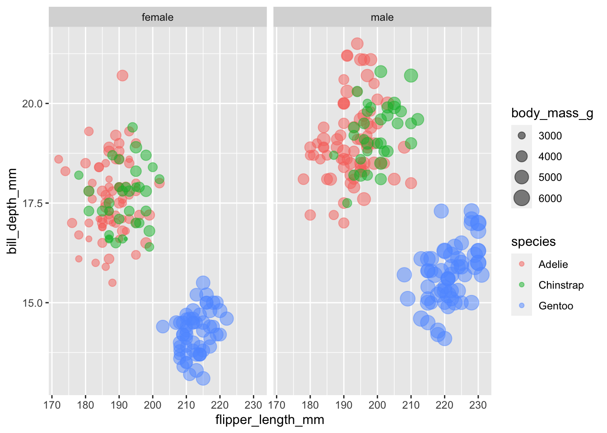
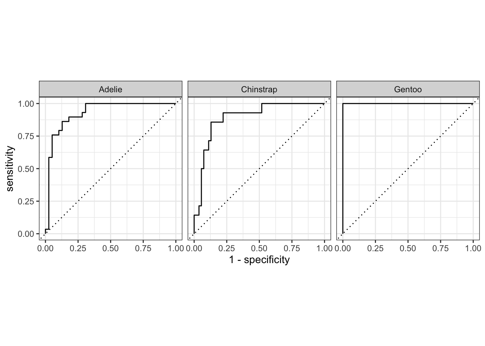
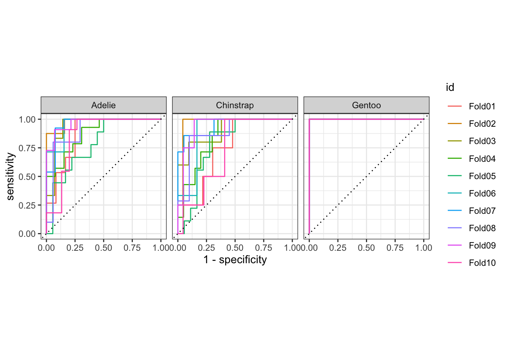

library(here)
library(tidyverse)
library(tidymodels)
tidymodels_prefer()Tidymodels Overview
pen <- penguins |>
select(!c(island, bill_length_mm))Explore Data
Outcome: species
glimpse(pen)Rows: 344
Columns: 5
$ species <fct> Adelie, Adelie, Adelie, Adelie, Adelie, Adelie, Adel…
$ bill_depth_mm <dbl> 18.7, 17.4, 18.0, NA, 19.3, 20.6, 17.8, 19.6, 18.1, …
$ flipper_length_mm <int> 181, 186, 195, NA, 193, 190, 181, 195, 193, 190, 186…
$ body_mass_g <int> 3750, 3800, 3250, NA, 3450, 3650, 3625, 4675, 3475, …
$ sex <fct> male, female, female, NA, female, male, female, male…pen |>
filter(!is.na(sex)) |>
ggplot(aes(x = flipper_length_mm,
y = bill_depth_mm,
color = species,
size = body_mass_g)) +
geom_point(alpha = 0.5) +
facet_wrap(~sex)
pen |>
count(species)# A tibble: 3 × 2
species n
<fct> <int>
1 Adelie 152
2 Chinstrap 68
3 Gentoo 124Complete record rate:
vapply(pen, function(x) mean(!is.na(x)), numeric(1)) species bill_depth_mm flipper_length_mm body_mass_g
1.0000000 0.9941860 0.9941860 0.9941860
sex
0.9680233 Data Budget
Split Data
set.seed(123)
pen_split <- initial_split(pen, prop = 0.8, strata = species)
pen_split<Training/Testing/Total>
<274/70/344>pen_train <- training(pen_split)
pen_test <- testing(pen_split)Resample
10-folded CV, repeated 2 times from the training data
set.seed(123)
pen_folds <- vfold_cv(pen_train, v = 10)
head(pen_folds)# A tibble: 6 × 2
splits id
<list> <chr>
1 <split [246/28]> Fold01
2 <split [246/28]> Fold02
3 <split [246/28]> Fold03
4 <split [246/28]> Fold04
5 <split [247/27]> Fold05
6 <split [247/27]> Fold06Recipes
pen_rec_base <- recipe(species ~ ., data = pen_train)
pen_rec_base── Recipe ──────────────────────────────────────────────────────────────────────── Inputs Number of variables by roleoutcome: 1
predictor: 4Model Spec
mspec_cls <- list(
multi_nnet = multinom_reg(engine = "nnet"),
multi_glmnet_lasso = multinom_reg(engine = "glmnet",
penalty = 0.1, mixture = 1)
)
map(mspec_cls, translate)$multi_nnet
Multinomial Regression Model Specification (classification)
Computational engine: nnet
Model fit template:
nnet::multinom(formula = missing_arg(), data = missing_arg(),
trace = FALSE)
$multi_glmnet_lasso
Multinomial Regression Model Specification (classification)
Main Arguments:
penalty = 0.1
mixture = 1
Computational engine: glmnet
Model fit template:
glmnet::glmnet(x = missing_arg(), y = missing_arg(), weights = missing_arg(),
alpha = 1, family = "multinomial")Workflow
Single
workflow(preprocessor = pen_rec_base, spec = mspec_cls$multi_nnet)══ Workflow ════════════════════════════════════════════════════════════════════
Preprocessor: Recipe
Model: multinom_reg()
── Preprocessor ────────────────────────────────────────────────────────────────
0 Recipe Steps
── Model ───────────────────────────────────────────────────────────────────────
Multinomial Regression Model Specification (classification)
Computational engine: nnet Combinations
pen_wfset <- workflow_set(
preproc = list(base = pen_rec_base),
models = mspec_cls
)
pen_wfset# A workflow set/tibble: 2 × 4
wflow_id info option result
<chr> <list> <list> <list>
1 base_multi_nnet <tibble [1 × 4]> <opts[0]> <list [0]>
2 base_multi_glmnet_lasso <tibble [1 × 4]> <opts[0]> <list [0]>pen_wf_base <- extract_workflow(pen_wfset, id = "base_multi_nnet")
pen_wf_base══ Workflow ════════════════════════════════════════════════════════════════════
Preprocessor: Recipe
Model: multinom_reg()
── Preprocessor ────────────────────────────────────────────────────────────────
0 Recipe Steps
── Model ───────────────────────────────────────────────────────────────────────
Multinomial Regression Model Specification (classification)
Computational engine: nnet Other Spec
Performance Matric Spec
A function factory
met_set_class <- metric_set(
accuracy, sensitivity, specificity,
mcc # Matthews correlation coefficient
)
met_set_mix <- metric_set(roc_auc, accuracy, sensitivity, specificity)Resamples Control
keep_pred <- control_resamples(save_pred = TRUE, save_workflow = TRUE)Fit
Using: Test Data
pen_fit_base <- fit(pen_wf_base, data = pen_test)
pen_fit_base══ Workflow [trained] ══════════════════════════════════════════════════════════
Preprocessor: Recipe
Model: multinom_reg()
── Preprocessor ────────────────────────────────────────────────────────────────
0 Recipe Steps
── Model ───────────────────────────────────────────────────────────────────────
Call:
nnet::multinom(formula = ..y ~ ., data = data, trace = FALSE)
Coefficients:
(Intercept) bill_depth_mm flipper_length_mm body_mass_g sexmale
Chinstrap -21.7033319 -0.555911 0.1906063 -0.001596491 0.7168018
Gentoo -0.4884471 -6.002835 0.2447407 0.011754103 3.8349607
Residual Deviance: 46.77568
AIC: 66.77568 Using: Resamples
# Unix and macOS only
library(doMC)Loading required package: foreach
Attaching package: 'foreach'The following objects are masked from 'package:purrr':
accumulate, whenLoading required package: iteratorsLoading required package: parallelregisterDoMC(cores = 4)pen_fit_fold_base <- fit_resamples(pen_wf_base,
resamples = pen_folds,
metrics = met_set_mix,
control = keep_pred)
head(pen_fit_fold_base)# A tibble: 6 × 5
splits id .metrics .notes .predictions
<list> <chr> <list> <list> <list>
1 <split [246/28]> Fold01 <tibble [4 × 4]> <tibble [0 × 3]> <tibble [28 × 7]>
2 <split [246/28]> Fold02 <tibble [4 × 4]> <tibble [0 × 3]> <tibble [28 × 7]>
3 <split [246/28]> Fold03 <tibble [4 × 4]> <tibble [0 × 3]> <tibble [28 × 7]>
4 <split [246/28]> Fold04 <tibble [4 × 4]> <tibble [0 × 3]> <tibble [28 × 7]>
5 <split [247/27]> Fold05 <tibble [4 × 4]> <tibble [0 × 3]> <tibble [27 × 7]>
6 <split [247/27]> Fold06 <tibble [4 × 4]> <tibble [0 × 3]> <tibble [27 × 7]>Evaluate & Predict
Using: Test set
Predict
pen_res_base <- broom::augment(pen_fit_base, new_data = pen_test)
glimpse(pen_res_base)Rows: 70
Columns: 9
$ species <fct> Adelie, Adelie, Adelie, Adelie, Adelie, Adelie, Adel…
$ bill_depth_mm <dbl> 18.7, 17.4, 18.0, 17.1, 20.7, 18.4, 17.9, 17.8, 21.1…
$ flipper_length_mm <int> 181, 186, 195, 186, 197, 184, 187, 188, 196, 179, 19…
$ body_mass_g <int> 3750, 3800, 3250, 3300, 4500, 3325, 3200, 3300, 4150…
$ sex <fct> male, female, female, NA, male, female, female, fema…
$ .pred_class <fct> Adelie, Adelie, Chinstrap, NA, Adelie, Adelie, Adeli…
$ .pred_Adelie <dbl> 0.9463005, 0.8797500, 0.4329285, NA, 0.8936564, 0.89…
$ .pred_Chinstrap <dbl> 0.05369946, 0.12024966, 0.56707149, NA, 0.10634361, …
$ .pred_Gentoo <dbl> 1.147426e-09, 3.454101e-07, 6.534172e-11, NA, 2.2390…Metric
met_set_class(pen_res_base,
truth = species,
estimate = .pred_class,
estimator = "macro" # Macro AVG
)# A tibble: 4 × 3
.metric .estimator .estimate
<chr> <chr> <dbl>
1 accuracy multiclass 0.809
2 sensitivity macro 0.727
3 specificity macro 0.896
4 mcc multiclass 0.704ROC
roc_curve(pen_res_base, truth = species,
.pred_Adelie, .pred_Chinstrap, .pred_Gentoo) |>
autoplot()
Gentoo curve is on the top-left see Figure 5.1 for reason.
roc_auc(pen_res_base, truth = species,
.pred_Adelie, .pred_Chinstrap, .pred_Gentoo)# A tibble: 1 × 3
.metric .estimator .estimate
<chr> <chr> <dbl>
1 roc_auc hand_till 0.933Using Resamples
Metric
collect_metrics(pen_fit_fold_base)# A tibble: 4 × 6
.metric .estimator mean n std_err .config
<chr> <chr> <dbl> <int> <dbl> <chr>
1 accuracy multiclass 0.823 10 0.0227 Preprocessor1_Model1
2 roc_auc hand_till 0.918 10 0.0166 Preprocessor1_Model1
3 sensitivity macro 0.753 10 0.0231 Preprocessor1_Model1
4 specificity macro 0.904 10 0.0110 Preprocessor1_Model1These are the resampling estimates averaged over the individual replicates. To get the metrics for each resample, use the option summarize = FALSE.
Predictions
Assessment set predictions:
pen_assess_base <- collect_predictions(pen_fit_fold_base, summarize = FALSE)
head(pen_assess_base)# A tibble: 6 × 8
id .pred_Adelie .pred_Chinstrap .pred_Gentoo .row .pred_class species
<chr> <dbl> <dbl> <dbl> <int> <fct> <fct>
1 Fold01 0.792 0.208 4.02e-25 10 Adelie Adelie
2 Fold01 0.691 0.309 3.25e-18 17 Adelie Adelie
3 Fold01 0.982 0.0177 7.24e-12 19 Adelie Adelie
4 Fold01 0.979 0.0209 2.11e-22 22 Adelie Adelie
5 Fold01 0.846 0.154 4.46e-12 46 Adelie Adelie
6 Fold01 0.880 0.120 5.82e-14 51 Adelie Adelie
# ℹ 1 more variable: .config <chr>.row column is an integer that matches the row of the original training set so that these results can be properly arranged and joined with the original data.
Averaged Predictions:
collect_predictions(pen_fit_fold_base, summarize = T) |> head()# A tibble: 6 × 7
.row species .config .pred_Adelie .pred_Chinstrap .pred_Gentoo .pred_class
<int> <fct> <chr> <dbl> <dbl> <dbl> <fct>
1 1 Adelie Preproces… NaN NaN NaN Adelie
2 2 Adelie Preproces… 0.514 0.486 1.41e-17 Adelie
3 3 Adelie Preproces… 0.874 0.126 8.77e-21 Adelie
4 4 Adelie Preproces… 0.949 0.0509 1.53e-14 Adelie
5 5 Adelie Preproces… 0.791 0.209 4.07e-13 Adelie
6 6 Adelie Preproces… NaN NaN NaN Adelie ROC
pen_assess_base |>
group_by(id) |>
roc_curve(truth = species, .pred_Adelie, .pred_Chinstrap, .pred_Gentoo) |>
autoplot()